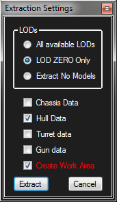
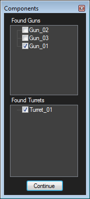

General Information on Tank Exporter
The first time Tank Exporter is ran, It will need to gather lots of data.
It will read and convert the shared_content and shared_content_sandbox and their HD counter parts and save only data related to the tanks in a file called shared_content_build.pkg in your temp folder section. The folder is called wot_temp.
This process takes a LOT of time.. Be patient.. It makes accessing the data easier for the app and faster.
When a game update changes tanks.. IE.. one is added or converted to HD.. you will need to delete the temp data and restart TE. You can do this under the File Menu item.
When Tank Exporter runs for the first time, it will also need to download data from the WoT Dev API site.
There is a lot of data there about the tanks such as their in game name which TE needs to function correctly.
The loading of data from the API is stored in a temp folder so this only needs to happen once after you install TE.
Under the File menu, you can delete the temp folder. Use this when new tanks have been added or existing ones changed. TE will shut down because it can not function with out the data. When you run the app again, it will go through all the loading of the data again. Don't reset the data unless you really need the new or changed tanks!
Tank Exporter will need the path to the game set.. It will ask for this after its done gathering data.
Usually its something like "C:\Games\World_of_Tanks_NA"
Paths are saved to the wot_temp folder... "username/appdata/local/temp/wot_temp"
Also.. you should set the path to the res_mods folder. Its located under the File menu.
NOTE that the version may be different from what's shown here:
Usually the res_mods folder looks like this: "C:\Games\World_of_Tanks\res_mods\1.0.0.3"
By setting the res_mods folder, TE will look for textures and models in that path and load them. Nice for custom skin mods.
Also.. if you extract data, this is where it will be placed.. More on this below. You can change this path and extract the tank data anywhere you would like.
|
Loading of tanks is done by RIGHT clicking on a tank name in the list.
Exporting them as FBX is done in the same way.
NOTE: If there is a model with the same name in the current res_mods folder path, it will be loaded from there.
Also.. To make life easier, you can also extract and create the data in the World of Tanks res_mods folder or where ever you chose. YOU WILL NEED TO SET THIS PATH!!!! |
|  |
If you decide to extract to the res_mods folder, you will be asked what you want to extract. You can chose All LODs, LOD0 or No models at all.
Below that you can pick what to extract. Chassis, Hull, Turret and Gun.
This also affects what textures will be extracted. If only Chassis is checked, than only textures with "Chassis" in their name will be extracted from the .pkg files.
Create Work Area will add a folder to the tanks root called "Work Area" and save the AM_HD and AO_HD maps to that folder in the PNG format. This saves having to do this maually using Swizzler or some other image tool to convert from DDS to PNG.
Extracting to the res_mods folder will NOT overwrite existing files! This is to protect any modding to textures or tank models you have done.
If you want to re-extract them, delete them first.
NOTE: Some mod installers will completely erase the contents on the res_mods folder!!
Be sure to backup your files before using mod installers such as Ashlian's Mod Installer. |
|  |
After you decide which tank to load or export as FBX, this window will open.
Because some tanks have many guns and turrets, you can tell Tank Exported which of these to load.
If you are unsure of which one is the correct one, load the game, select the tank and take a screen shot for reference.
Typically, the icon Tank Exporter shows when mousing over a tank name is the default tank when you first buy it.
If the tank looks like the TE shows in the icon window, you probably have the wrong turret or gun.
|
You can get some information about the Texture Viewer HERE.
If you are having problems rendering the tank (no texturing) , there is a setting under the file menu called "Simple Lighting". This will render the tanks with out using the shader. If you are having this problem, please create a ticket at GitHub so I can address the issue. I need your Graphics chip/card info. |
TE's exports version 2009 FBX.. This will not load directly into Blender.. However, you can download AutoDesk' FREE FBX converter. It can load and convert 2009 to new versions and also export in other formats such as OBJ. This tool of AutoDesk's should be in every 3D artist toolbox!
There are some items on the Menu bar that are pretty self explanatory. Try clicking them after a tank is loaded to see what they do.
Currently, TE can NOT import tanks and some tanks MAY be missing off the list. Some guns are missing as well.
|
There are some bugs with the camouflage... Some times there is more camo than is in the game or repeats of the same show up on the list.
This is a visual thing and not a big deal.. Be happy you can even load camouflage :)
|
The Work Flow goes like this....
NOTE: You can NOT edit Guns or Chassis because of the vertex format these models use!
1: Set the game path.. "/games/World_of_tanks" and res_mods paths... Res_mods should be pointing to the latest version .. Like this: "C:\Games\World_of_Tanks_NA\res_mods\0.9.20.0"
2: Right click on a tank and select "Extract to res_mods Folder".. This will created the folder tree with the correct paths for that tank.. You can decide what to extract in the panel that pops up. The default settings will extract all the textures and models for LOD0. There is a bug that might show up if for instance the HULL is not in LOD0. I will fix this later. It is a good idea to ONLY extract parts you want to change.. It slow the loading down in game if it has to load a bunch a crap that is not changed. IT WILL NOT OVER WRITE EXISTING FILES! If you want to start over.. delete them in Explorer.
3: Export the tank.. Right click and select "Export FBX". This will ask for a name.. it defaults to the tanks name and I would just use it.. All you need to do is set the folder where to create the FBX.
4: Go to max... Set the interfaces units to 1 unit = 10.0 centimeters. This is important or objects you create will be the wrong size in the game.
You can set this under the "Customize" menu at the top of Max.
5: Import the FBX.. There are no lights or cameras in the scene so you can uncheck these if you want. MAKE SURE its set to Y UP!!!
6: Edit your model.. OR add something.. You can import something also BUT... REMEMBER TO ADD "_hull" or "_turret" to the name of the object!. As of now, I can NOT export the gun or chassis.. they are skinned meshes using the xyznuviiiwwtb format.. This will take reserch to figure out how to deal with weighted maps.
You can added more than one item as a seperate mesh. Make sure you have the UVs and material set up.
You can use up to 3 textures for the material. Diffuse, Normal and Specular. TE will modify the visual and add these textures and pick which shader to use based on the textures assigned.
7: After you have your new object where you want it.. use the Reset Xform I mentioned above. What this does exactly I am not sure but it works.
8: Import the model in to Tank Exporter. Its under the File Menu. This loads the original model as well to figure out what has been changed.
9. Under File menu,, Click "Write Primitive".. This will bring up a panel with check boxes on it. If you added something or changed the hull or turret in anyway, these boxes should be checked. (As of now.. The engine can only handle adding items to either the hull or turret.. you can NOT add to both and write them both out as primitives at the same time.. You will need to do this as separate steps.
10. Load world of tanks and load that tank.
|
This app was originally created to use with Terra.. A program I wrote to load maps from World of Tanks and create battle layout plans for Clan battles.
Clicking on a tank name adds it to the export list.. clicking on it again removes it. There is also a Menu item above the list to clear the selected tanks.
Under the File Menu, there is a selection to show the folder where all the tanks are exported to. This is not much use to the average user of TE.. However..
Using Tank Exporter, you can create your own custom tank list for Terra..
This is how its done:
1. Load the tank list ( File > Load ) and change what to export by clicking on the tanks.. If they are highlighted, they will be exported.
2. SAVE your list.. Creating a custom list and not saving it can cause you a lot of un-needed work!.
3. Click "Export Tank List". This will bring up a dialog asking if you really want to do this. (Get some Coffee.. this can take a while if the list is long.. and you want lots of tanks to select from in Terra!)
4. Go to "File" > "Open Tank Folder"... This is where all the tank data will be placed.
5. Select Everything in this folder by pressing Ctrl + A.
6. Press Ctrl + C to copy.
7. Navigate to where Terra is installed. "C:\Program Files (x86)\Coffee_\Terra!"
8. Open the "tanks" folder.
9. Now.. OVER WRITE and REPLACE everything in that folder.
10.a Press Ctrl + A ..... Press Ctrl + P.
10.b
It is important that the
"tanknames.txt" file was also copied over to the new Terra!\tanks folder. Terra! uses this list when loading the tanks!
11. This should of selected everything and pasted and or replaced anything in that folder.
12. Terra! is now ready to use your new tank selections.
|
I do this as a hobby... I work many hours figuring out how this stuff works and share my work on GitHub so others might create projects of their own.
If you like my Tools and use them.. please consider becoming a Patron of my work! More information is at the link below.
|
Integrated DLLs and Programs with links to their licenses and more information.
Tao OpenGL : This project is now dead.. Sad.. It's a great Opengl Wrapper.
DevIL : Very nice Image loading and manipulation open source library.
DotNetZip : A great wrapper for working with zip files.
SlimDX : A wrapper that brings DirectX functions in to .NET. I use this for matrix mathematics. |
Warning!!
| All Data.. Models and Textures(except a few I got of the internet) come from with in the game's .pkg files and the Dev API. This data is owned by WARGAMING.NET |
|
|